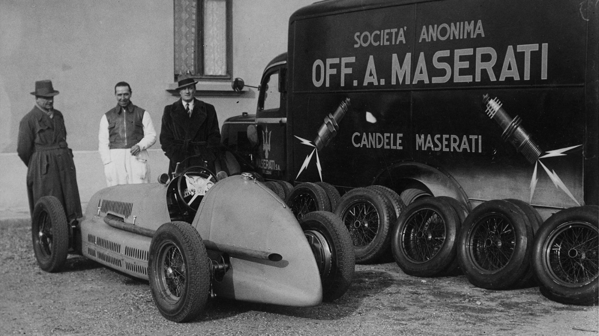
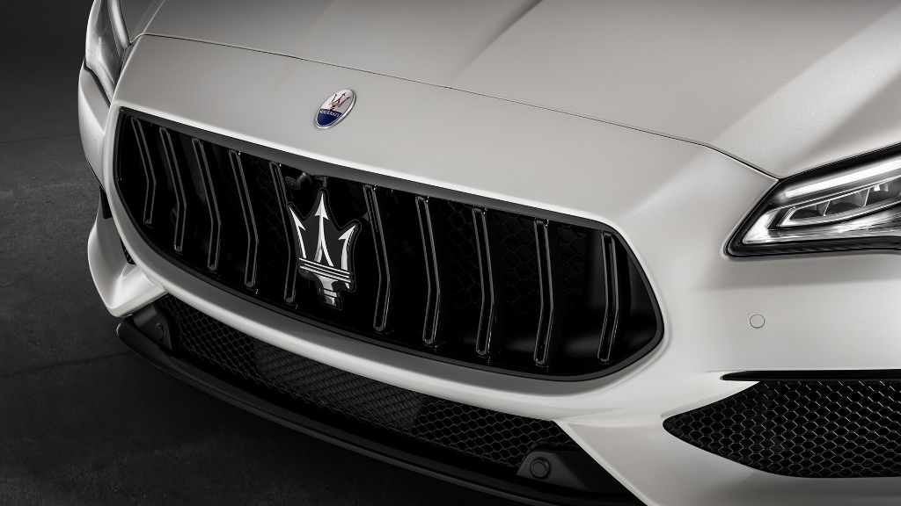
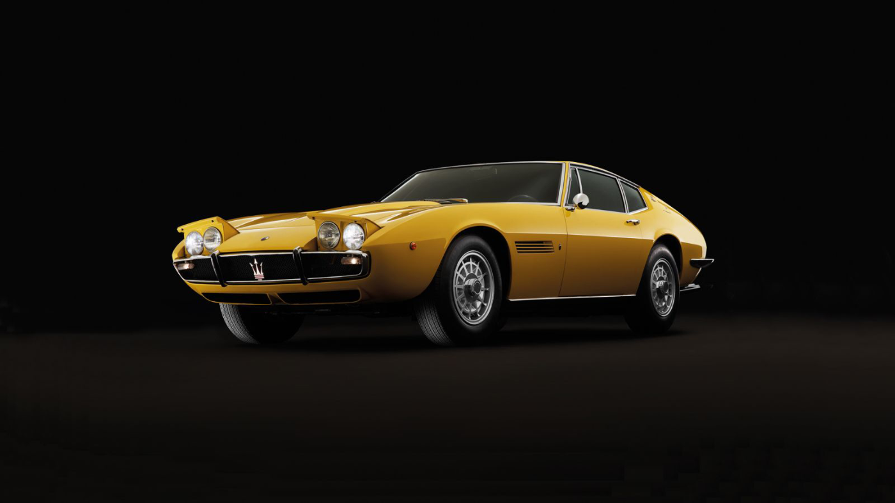
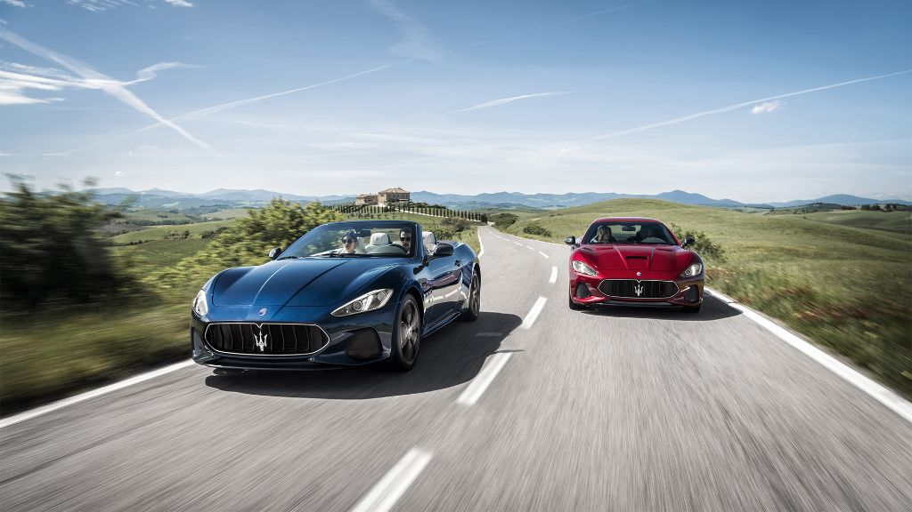

这是玛莎拉蒂的故事
1914年，玛莎拉蒂兄弟在意大利博洛尼亚创办阿尔菲力玛莎拉蒂公司(Officine Alfieri Maserati)，当时他们无法想象此举会为整个世界带来多么深远的影响。 玛莎拉蒂四兄弟(阿尔菲力、埃多勒、埃内斯特和宾多)因为对汽车和发动机的共同热忱而团结在一起，他们的远见卓识、热情和专业精神，为玛莎拉蒂的发展奠定坚实基石，使玛莎拉蒂逐步成为享誉全球的汽车。 玛莎拉蒂的传奇从此开启。

百年荣耀，一脉传承
1914年12月1日，阿尔菲力玛莎拉蒂公司在意大利博洛尼亚诞生。此后，玛莎拉蒂在跑车文化的发展历程中始终占据举足轻重的地位。一个世纪以来，玛莎拉蒂无论在公路还是赛道上都取得了辉煌成就，也度过了一次次困境。以往的重重挑战，造就了公司坚韧鲜明的品质和个性。
了解更多阅读更少+
除了辉煌的赛车成就和公路汽车研发，玛莎拉蒂还坚持不懈致力于企业的发展。1940年，玛莎拉蒂从博洛尼亚迁至摩德纳Ciro Menotti大街，这是玛莎拉蒂企业发展的重要一步。
时至今日，历史悠久的玛莎拉蒂总部正向全球辐射的影响力。
如今玛莎拉蒂业务遍布全球70多个市场。每一台玛莎拉蒂座驾都凝聚着品牌的传承与创新，过去与未来，回忆与愿景，彰显与其他汽车品牌截然不同的独特品格。在立足于意大利基因的同时，玛莎拉蒂坚定地将目光投向未来世界。
玛莎拉蒂的荣耀体现于品牌蕴含的价值观。接下来，您将走进玛莎拉蒂的传奇历史，了解造就品牌不朽声誉的代表人物、杰出成就和重要车型。
传奇三叉戟
三叉戟是这一传奇的化身。玛莎拉蒂历史上的所有赛车都镶有三叉戟标识。这一徽标历经玛莎拉蒂的风格变迁、技术创新和性能，见证品牌的辉煌历程。
了解更多阅读更少+

自16世纪起便屹立于博洛尼亚Maggiore广场上的海神雕像，是玛莎拉蒂历史上的一个重要标志。三叉戟标识的灵感就源自海神喷泉，它是博洛尼亚和玛莎拉蒂的共同象征。
1920年左右，玛莎拉蒂决定设计品牌标识，为新车打造卓尔不群的形象。这一工作最终交由马里奥•玛莎拉蒂负责。他是玛莎拉蒂兄弟中唯一不痴迷于汽车的人，也是一位才华过人的艺术家。马里奥受到Maggiore广场上海神尼普顿雕像的启发，海神手中的三叉戟象征着力量与活力。品牌标识中的红蓝配色，源于当时玛莎拉蒂所在城市博洛尼亚旗帜的颜色。
如今，三叉戟早已与玛莎拉蒂融为一体，象征玛莎拉蒂座驾独特性，彰显玛莎拉蒂的优雅气质与性能。

风格演变
1914年12月1日，阿尔菲力玛莎拉蒂公司在意大利博洛尼亚诞生。此后，玛莎拉蒂在跑车文化的发展历程中始终占据举足轻重的地位。一个世纪以来，玛莎拉蒂无论在公路还是赛道上都取得了辉煌成就，也度过了一次次困境。以往的重重挑战，造就了公司坚韧鲜明的品质和个性。
了解更多阅读更少+
六十年代，玛莎拉蒂的设计风格再次转变，洗练清晰的线条与柔和起伏的曲面融合，展现出鲜明的独特风格。七十年代，伴随技术革新的步伐，玛莎拉蒂研发出更符合空气动力学的设计方案，以直线线条勾勒出利落的轮廓，凸显硬朗风格。八九十年代，玛莎拉蒂车身采用直角设计，随后逐渐演变为如今的流畅廓线，更显圆润而魅力不减。
玛莎拉蒂曾与多位工程师和设计师合作，包括乔杰托•乔治亚罗(Giorgetto Giugiaro)、乌戈•扎嘉托 (Ugo Zagato)、洛伦索•拉曼乔蒂(Lorenzo Ramaciotti) 和宾尼法利纳 (Pininfarina)。玛莎拉蒂与宾尼法利纳多次携手合作，推出多款深受欢迎的设计和具有划时代意义的概念车型，其中玛莎拉蒂“鸟笼”75周年概念车可谓玛莎拉蒂的当代力作。
独特设计
继Quattroporte总裁轿车之后，宾尼法利纳操刀设计了一款全新双门轿跑，对玛莎拉蒂乃至整个汽车行业产生了深远影响。这就是动人心魄的GranTurismo跑车。
了解更多阅读更少+

2014年，玛莎拉蒂发布Alfieri概念跑车，致敬玛莎拉蒂百年运动基因。这款匠心打造的强悍跑车绝不是怀旧之作，富于想象力的车身外观美轮美奂，宛若屹立于车轮上的动感雕塑。
与此同时，玛莎拉蒂斥巨资打造全新生产平台，倾力推出全新四门轿跑，并以历史车型Ghibli命名，专为精英人士打造。Ghibli轿车一经推出，深受欢迎，为玛莎拉蒂销量创下新高，献礼品牌百年华诞。
随着销量持续攀升，玛莎拉蒂再次扩充旗下产品阵容，发布了SUV之作——Levante。至此，玛莎拉蒂凭借Quattroporte总裁轿车、Ghibli轿车、GranTurismo跑车、GranCabrio敞篷跑车和SUV Levante，覆盖全球豪华汽车市场的所有细分领域。